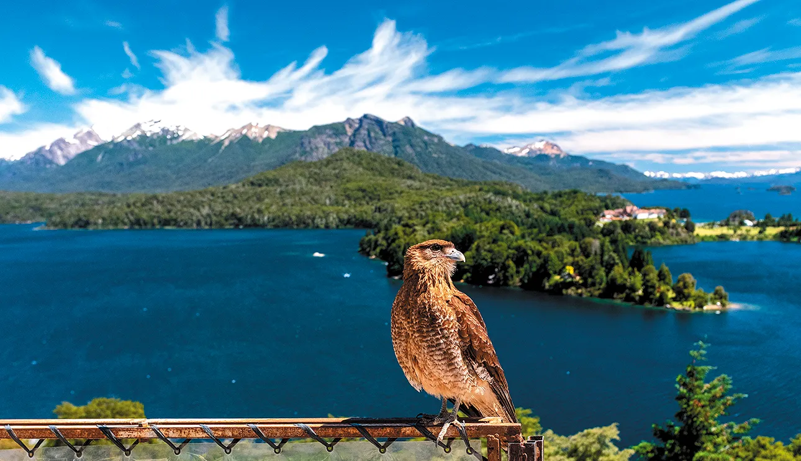

DESANDAR VALLES Y QUEBRADAS, ATRAVESAR BOSQUES O SELVAS, PRACTICAR KAYAK O BAJAR A TODA VELOCIDAD POR UN RÍO EN RAFTING SON ALGUNAS DE LAS OPCIONES QUE PRESENTA EL SUR ARGENTINO. ACÁ, CINCO ALTERNATIVAS PARA TERMINAR EL VERANO A PURA ADRENALINA.
1. BARILOCHE, CAPITAL NACIONAL DE LA AVENTURABariloche es como un parque de diversiones gigante para disfrutar de su entorno. Acá se pueden vivenciar experiencias distintas en un marco único. Los lagos para navegar, la montaña para caminar y andar en bicicleta. La Capital Nacional de la Aventura cuenta con una diversa oferta de actividades al aire libre. Cabalgatas, rafting, tirolesa, parapente, canopy, kayak, windsurf, kitesurf y senderismo.
Para remar en kayak, el lago Gutiérrez es el rincón ideal. Los hay simples, dobles o triples y se pueden hacer salidas de medio día, jornada completa y de hasta diez días de duración, armados a gusto del consumidor, que incluyen transporte, kayaks, comidas, guías y equipo de acampe. El canopy es un circuito de tirolesas montado entre árboles, en el bosque o en la selva.
